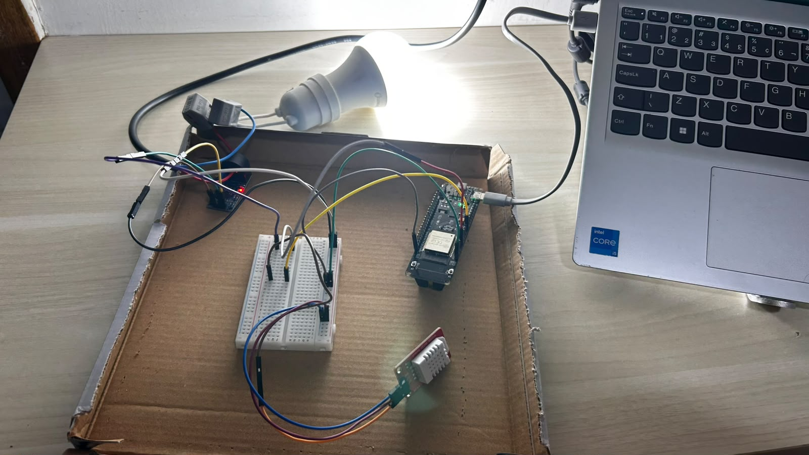
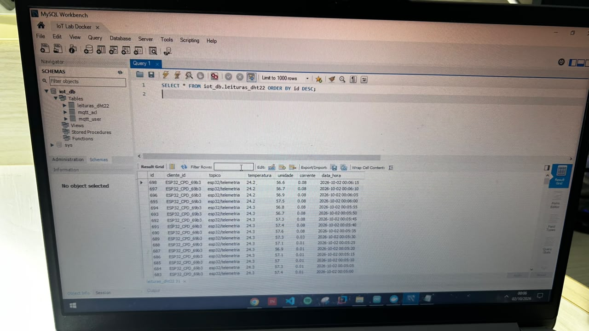

Telemetria Climática e Continuidade Energética para CPDs
Sistema IoT ponta a ponta para contenção de hotspots térmicos e auditoria contínua de demanda de corrente alternada em Centros de Processamento de Dados. Solução resiliente com processamento na borda, mensageria MQTT industrial e banco de dados relacional.
Microclima em Tempo Real
Monitoramento contínuo de temperatura e umidade relativa do ar via sensor digital DHT22 em conformidade com as normas operacionais da ASHRAE.
Cálculo RMS Discreto
Medição de corrente alternada com sensor toroidal ZMCT103C, amostrando a 60 Hz em janelas de 200 ms para obter o valor eficaz real (RMS).
Pipeline Local-First
Infraestrutura conteinerizada em Docker (EMQX + MySQL) que assegura privacidade, imunidade a quedas de link externo e baixa latência.
Plataforma IoT e Arquitetura de Dados
Integração entre o nó embarcado e a persistência relacional através de mensageria assíncrona.
Fluxo da Arquitetura de Ingestão
Broker MQTT (EMQX 5.x)
- Broker industrial operando em contêiner Docker na
porta
1883. - Autenticação por credenciais (
esp32_cpd) no tópicoesp32/telemetria. - Rule Engine SQL interno que extrai campos do payload sem necessidade de backends intermediários.
- Conector Data Bridge com inserção direta assíncrona no MySQL.
Banco de Dados (MySQL 8.0)
- Schema relacional
iot_dbconfigurado com volumes persistentes. - Tabela
leituras_dht22contendo métricas de clima, corrente e timestamp sincronizado. - Auditoria e validação via MySQL Workbench através da
porta local
3306. - Preparado para indexação analítica e consultas temporais da etapa N2.
Dispositivos de Borda e Circuito
Conexões físicas, barramentos de energia e ensaio experimental em bancada.

Bancada de Ensaios com Carga Ativa
Montagem experimental isolada: microcontrolador ESP32 DevKit v1, DHT22 (GPIO 27) para sensoriamento térmico e ZMCT103C (GPIO 34) monitorando indutivamente o condutor Fase da lâmpada de teste em rede de 220V AC sem contato galvânico direto com o circuito lógico.
| Componente | Pino Físico | Pino ESP32 | Interface Elétrica | Descrição Técnica |
|---|---|---|---|---|
| Sensor DHT22 | DAT | GPIO 27 |
Digital Single-Bus | Leitura de temperatura e umidade a cada 5 segundos |
| Sensor ZMCT103C | OUT | GPIO 34 |
Analógico (ADC1) | Leitura RMS com offset central; imune a ruídos do rádio Wi-Fi |
| Alimentação Lógica | VCC / GND | 5V / GND |
Barramento DC | Distribuído pelas calhas laterais (+) e (-) da protoboard |
| Carga AC (220V) | Fase Única | Orifício Toroidal | Acoplamento Magnético | Isolamento galvânico total sem contato elétrico com a placa |
Fundamentação Matemática da Corrente RMS
Por se tratar de corrente alternada em 60 Hz, o sinal oscila em torno de um offset DC (~1680 no conversor analógico de 12 bits). O ESP32 realiza amostragem contínua durante 200 ms, calcula o desvio quadrático médio em relação ao valor médio e aplica o fator de calibração empírico, zerando leituras com desvio abaixo de 18.0 para suprimir o ruído térmico em repouso.
Aplicativo e Camada de Apresentação
Resultados práticos homologados na bancada N1 e projeções para o dashboard N2.

Auditoria em Banco de Dados (MySQL Workbench)
Registros no banco iot_db comprovando a transição de repouso
(0.01 A) para regime ativo estável (0.08 A), com monitoramento
térmico constante a 24.3 °C e ~57% de umidade em intervalos de 5
segundos.
Métricas de Ensaio
Comportamento elétrico e ambiental validado sob carga real com taxa de amostragem determinística e sincronização temporal.
Dashboard Web SPA & Notificações
O ecossistema será expandido com um painel progressivo em tempo real conectado via WebSockets, integrando cálculo de consumo acumulado em kWh e notificações automáticas de incidentes térmicos.